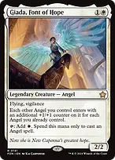
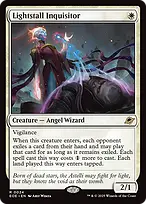
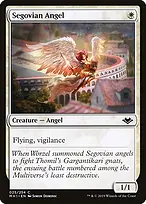
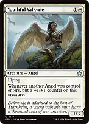
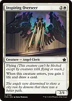
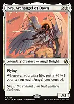
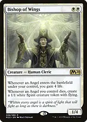
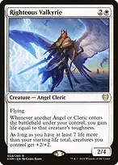
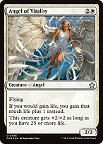

Start small and make every Angel matter

Giada, Font of Hope

her counter ability modifies how other Angels enter; it is not a triggered ability. Count Angels already on the battlefield, including Giada. Angels entering simultaneously do not count each other. Giada herself receives no counters from this ability, and removing her afterward does not remove counters already placed.
Giada's white mana pays only for Angel spells. It can pay for an Angel's warp cost or a changeling creature, but not an equipment activation, protection spell, token-making ability, or non-Angel support creature. Vigilance lets her attack and still tap for mana afterward, once she is no longer summoning sick.

+
Lightstall Inquisitor + Segovian Angelinexpensive bodies establish the count before your larger Angels enter. Inquisitor makes opponents temporarily commit a card to a more expensive spell or tapped land; it does not permanently remove those cards. Segovian's flying and vigilance make it a useful attacker and blocker once the counter engines are active.

Youthful Valkyriegrows whenever another Angel enters, including a token. Deploy it early so subsequent plays grow both the newcomer through Giada and Valkyrie through its own trigger.

Inspiring Overseer
an Angel that replaces itself and gains a life. The life event activates the counter engines, while the additional body increases the size of later Angels.

Lyra, Archangel of Dawneach life-gain event puts a counter on every Angel you control. Ten life gained at once is one trigger; life gained separately from several sources creates several triggers. This is a different card from Lyra Dawnbringer, and both can coexist.

Bishop of Wingseach Angel entering gains four life, and each Angel dying leaves a flying Spirit. Spirits are not Angels and receive no Giada entry counters, but they preserve blockers after a creature wipe.

Righteous Valkyriegains life equal to each other entering Angel or Cleric's toughness, including its entry counters. At 47 or more life in a normal 40-life game, its +2/+2 anthem strengthens all your creatures. The anthem switches off immediately if your life falls below that threshold.

Angel of Vitalityturns each life-gain event into one additional life, helping meet Resplendent Angel's five-life threshold. Four life from Bishop becomes five. Larger life gains remain a single event for Lyra and Archangel of Thune.
Opening hands and sequencing
Keep two or three lands with reliable white mana, Giada access through the command zone, and an early Angel, accelerator, or draw engine. A two-land hand needs a credible next land or cheap plays; a hand of Avacyn, Emissary, and several five-drops is a mulligan despite its late power. Avoid opening hands overloaded with colorless utility lands.
A good start is a one-mana Angel, Sentinel or Sol Ring on turn one, Giada on turn two, then a three- or four-mana Angel or Patchwork Banner on turn three. Giada's mana is available only once she can tap. With extra mana, deploying a cheap Angel before a larger one increases the latter's entry counters; do the arithmetic before spending Giada's restricted mana. Herald of War should attack every turn it safely can, since each attack makes the rest of your hand cheaper.
Keep one protection spell available once you have a threatening board. Spreading all resources into a fourth large Angel can be worse than keeping the first three safe. Use draw engines before the hand empties, and reserve the most expensive threats for when you can cast them without abandoning interaction.
Life thresholds care about different things: Righteous Valkyrie wants a current total of 47, Angel of Destiny wants 55, Resplendent Angel wants five life gained during that turn, and Luminarch Ascension wants no life lost that opponent's turn. Track them separately. Cast a flash Angel early enough to gain life BEFORE an end step begins if you want Resplendent to trigger there.
The deck wins through accumulated flying pressure, usually with a protection spell or Will backing the decisive attack. There is no intentional infinite combo. Its main weaknesses are repeated commander removal, exile wipes, and spell-based combo decks that can ignore combat; apply pressure and preserve the appropriate answer instead of trying to gain an arbitrary amount of life.